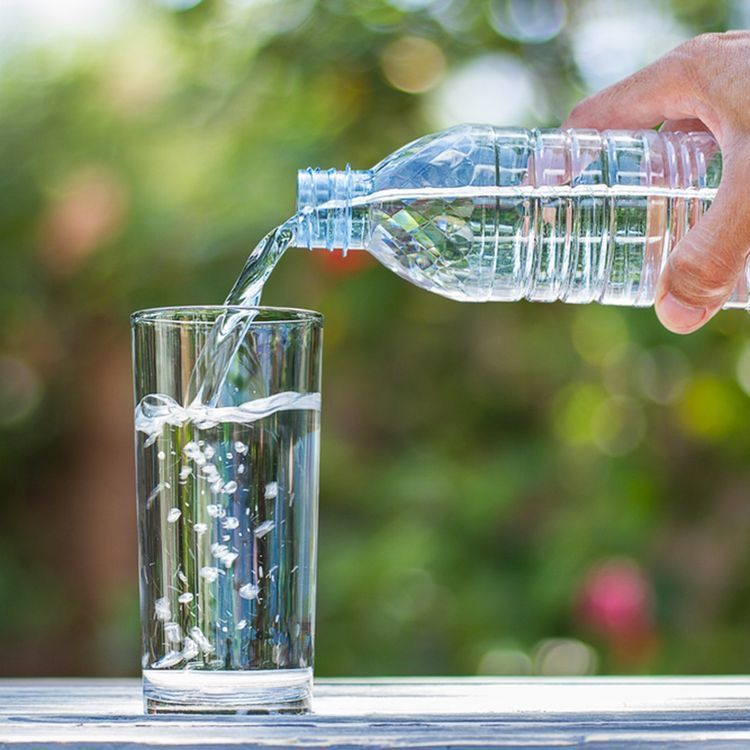
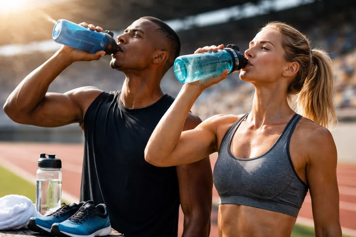
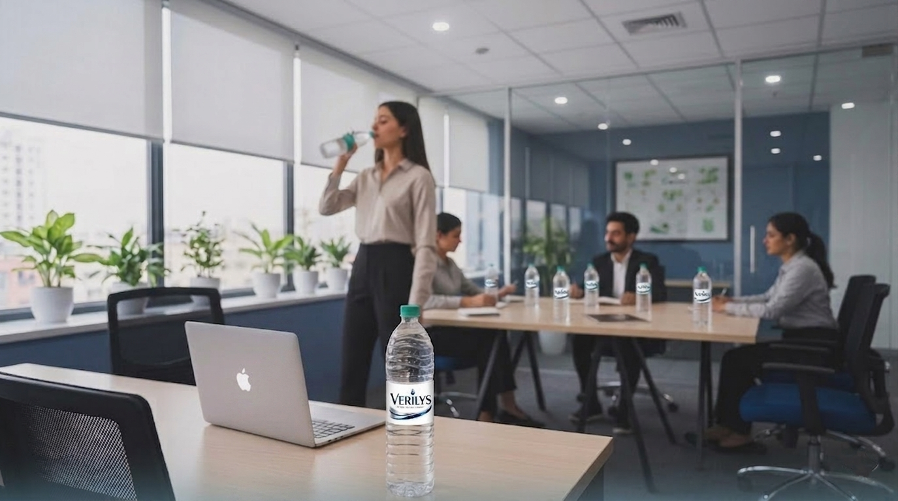

Tin Tức Nổi Bật Về Nước Tinh Khiết
Trong thời đại hiện đại, nước uống đang trở thành yếu tố quyết định sức khỏe và phong cách sống Giữa nhịp sống ngày càng bận rộn, con người hiện đại bắt đầu quan tâm nhiều hơn đến sức khỏe thể chất và tinh thần. Những lựa chọn tưởng chừng nhỏ bé mỗi ngày như chế độ ăn uống, vận động hay nguồn nước sử dụng cũng đang dần trở thành yếu tố quan trọng quyết định chất lượng cuộc sống. Nếu trước đây người tiêu dùng chỉ cần một chai nước để giải khát, thì ngày nay họ tìm kiếm nhiều hơn thế: sự tinh khiết, độ an toàn, cảm giác yên tâm và cả hình ảnh thương hiệu mà họ đồng hành mỗi ngày.
Đó cũng chính là lý do thương hiệu nước tinh khiết Verilys ngày càng được nhiều người lựa chọn như một phần của phong cách sống hiện đại. Không chỉ mang đến nguồn nước sạch chất lượng cao, Verilys còn tạo nên trải nghiệm sống khỏe, tích cực và tinh tế cho người tiêu dùng.
1. Nước tinh khiết Verilys giúp cơ thể duy trì trạng thái khỏe mạnh mỗi ngày
Cơ thể con người có đến khoảng 70% là nước. Vì vậy, việc bổ sung đủ nước sạch mỗi ngày đóng vai trò cực kỳ quan trọng trong việc duy trì hoạt động của toàn bộ cơ thể. Theo các chuyên gia sức khỏe, nước tinh khiết hỗ trợ:
Điều hòa thân nhiệt, hỗ trợ trao đổi chất, thanh lọc cơ thể, duy trì năng lượng, hỗ trợ hoạt động của não bộ và giúp làn da khỏe mạnh hơn.
Tuy nhiên, không phải nguồn nước nào cũng mang lại cảm giác an tâm tuyệt đối. Người tiêu dùng hiện đại ngày càng cẩn trọng trong việc lựa chọn sản phẩm liên quan trực tiếp đến sức khỏe, đặc biệt là nước uống sử dụng hằng ngày.
Verilys hiểu rõ điều đó và định hướng phát triển như một thương hiệu nước tinh khiết chất lượng cao dành cho cuộc sống hiện đại. Mỗi chai nước Verilys được sản xuất thông qua quy trình xử lý nghiêm ngặt nhằm đảm bảo độ tinh khiết và an toàn trước khi đến tay người dùng.

2. Verilys mang đến sự an tâm trong từng chai nước
Verilys tập trung đầu tư vào hệ thống công nghệ lọc hiện đại nhằm loại bỏ các tạp chất, vi khuẩn và thành phần không mong muốn trong nguồn nước đầu vào. Toàn bộ quy trình sản xuất được kiểm soát nghiêm ngặt nhằm đảm bảo độ tinh khiết ổn định trong từng sản phẩm.
Đối với nhiều người tiêu dùng hiện đại, việc lựa chọn Verilys không đơn thuần là mua một chai nước uống mà còn là lựa chọn sự yên tâm cho bản thân và gia đình. Đặc biệt, trong bối cảnh môi trường và chất lượng nguồn nước đang được quan tâm nhiều hơn, các thương hiệu chú trọng đến chất lượng thật sự như Verilys ngày càng được đánh giá cao.
3. Hỗ trợ phong cách sống năng động và hiện đại
Một trong những yếu tố giúp nước tinh khiết Verilys ngày càng được người tiêu dùng trẻ yêu thích chính là khả năng hòa nhập vào phong cách sống hiện đại. Trong thời đại mà khách hàng không chỉ quan tâm đến chất lượng sản phẩm mà còn chú trọng đến trải nghiệm sử dụng và hình ảnh thương hiệu, Verilys đã nhanh chóng tạo được dấu ấn riêng bằng thiết kế tối giản nhưng vẫn mang cảm giác cao cấp và tinh tế.
Không chỉ đơn thuần là sản phẩm giải khát, Verilys đang dần xuất hiện như một biểu tượng của lối sống tích cực và cân bằng trong cuộc sống hiện đại. Hình ảnh chai nước Verilys ngày càng phổ biến tại văn phòng làm việc, không gian coworking, phòng gym, studio yoga, quán café hiện đại hay các hội nghị doanh nghiệp. Sự hiện diện đó cho thấy nước uống ngày nay không còn chỉ phục vụ nhu cầu cơ bản mà đã trở thành một phần trong phong cách sống của người trẻ – những người luôn ưu tiên sức khỏe, sự tiện lợi và trải nghiệm chất lượng trong từng lựa chọn hằng ngày.

4. Verilys giúp duy trì năng lượng và sự tập trung trong công việc
Nhiều nghiên cứu cho thấy việc thiếu nước có thể khiến cơ thể mệt mỏi, giảm khả năng tập trung và ảnh hưởng đến hiệu suất làm việc. Trong môi trường làm việc hiện đại, đặc biệt là với dân văn phòng hoặc những người thường xuyên phải làm việc với cường độ cao, việc bổ sung đủ nước sạch mỗi ngày là điều cực kỳ cần thiết. Verilys mang đến cảm giác dễ uống, thanh nhẹ và phù hợp để sử dụng thường xuyên trong suốt cả ngày. Đây là yếu tố quan trọng bởi người dùng hiện đại không chỉ cần nước sạch mà còn cần sự thoải mái khi sử dụng liên tục. Nhiều khách hàng đánh giá rằng Verilys tạo cảm giác nhẹ nhàng, không quá “nặng vị”, giúp họ duy trì thói quen uống đủ nước mỗi ngày dễ dàng hơn. Đây chính là lợi ích quan trọng nhưng thường bị bỏ quên trong cuộc sống bận rộn hiện nay.

5. Verilys và xu hướng tiêu dùng hướng đến sức khỏe lâu dài
Một trong những thay đổi rõ rệt của người tiêu dùng hiện đại là xu hướng ưu tiên các sản phẩm mang lại giá trị sức khỏe bền vững thay vì chỉ quan tâm đến giá thành. Ngày nay, nhiều người sẵn sàng đầu tư cho thực phẩm sạch, không gian sống lành mạnh, thói quen tập luyện và các sản phẩm hỗ trợ chăm sóc sức khỏe hằng ngày. Đặc biệt, nguồn nước tinh khiết chất lượng cao cũng trở thành yếu tố được quan tâm nhiều hơn bởi đây là nhu cầu thiết yếu ảnh hưởng trực tiếp đến chất lượng cuộc sống và sức khỏe lâu dài của mỗi người.
Xuất hiện đúng vào thời điểm xu hướng sống khỏe ngày càng phát triển mạnh, Verilys nhanh chóng tạo được sự chú ý nhờ hình ảnh hiện đại và định hướng tập trung vào chất lượng thật sự. Thay vì lựa chọn những chiến dịch quảng bá quá phô trương, Verilys ưu tiên xây dựng niềm tin thông qua trải nghiệm thực tế của khách hàng và sự ổn định trong từng sản phẩm. Chính chiến lược phát triển bền vững này đã giúp thương hiệu từng bước hình thành cộng đồng khách hàng trung thành – yếu tố đóng vai trò rất quan trọng trong thị trường tiêu dùng hiện đại ngày nay.
6. Giá trị thương hiệu Verilys không chỉ nằm ở sản phẩm mà còn ở trải nghiệm
Một thương hiệu mạnh không chỉ dừng lại ở việc cung cấp sản phẩm mà còn phải tạo ra cảm xúc và giá trị tinh thần cho khách hàng. Verilys hiểu rằng người tiêu dùng hiện đại ngày nay không chỉ tìm kiếm một chai nước sạch để giải khát, mà còn mong muốn cảm giác tích cực, sự an tâm và trải nghiệm chất lượng trong cuộc sống hằng ngày. Chính vì vậy, từ thiết kế bao bì, hình ảnh thương hiệu cho đến thông điệp truyền thông, Verilys đều hướng đến phong cách tinh gọn, hiện đại và cao cấp nhằm tạo nên dấu ấn chuyên nghiệp trong mắt người tiêu dùng.
Định hướng đó giúp Verilys dễ dàng tiếp cận nhóm khách hàng trẻ – những người yêu thích sự tối giản nhưng vẫn đề cao chất lượng sống và giá trị bền vững. Không chỉ là thương hiệu nước tinh khiết, Verilys đang từng bước xây dựng hình ảnh như biểu tượng của sự tinh khiết, lối sống khỏe mạnh, cân bằng và hiện đại. Đây cũng là yếu tố giúp thương hiệu ngày càng tạo được sự khác biệt trong thị trường nước uống cạnh tranh hiện nay.